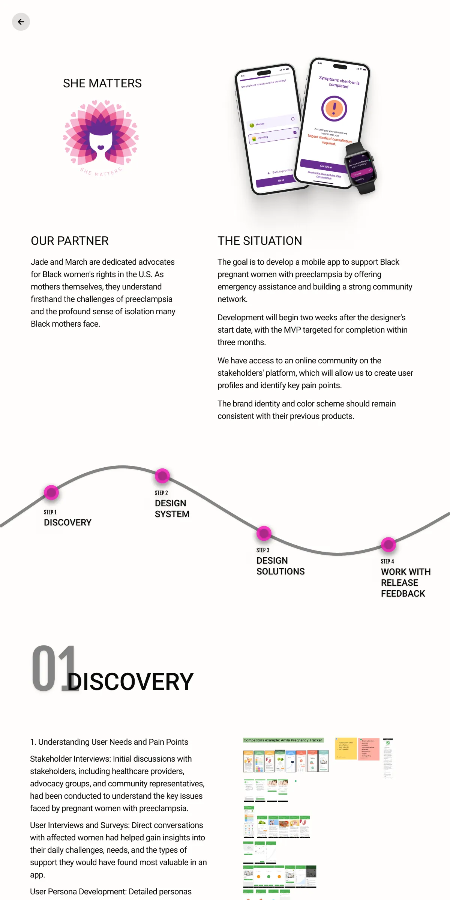
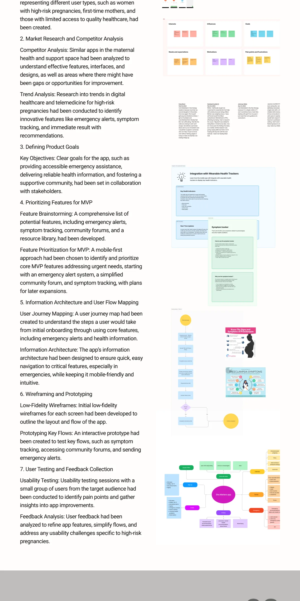
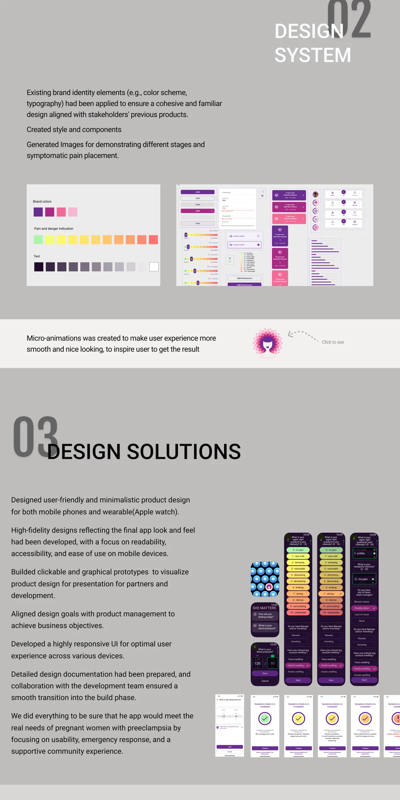
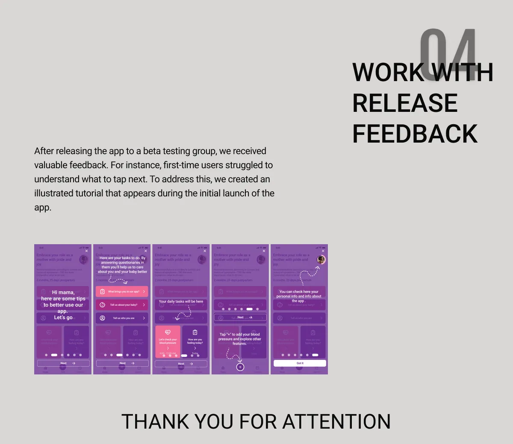

Discovery
Research explored user needs, barriers to healthcare, and the information needed during urgent situations. Journey mapping, wireframes, and prototypes shaped the MVP.
Healthcare · Mobile & wearable
Clear support for moments that matter.
A mobile experience supporting Black pregnant women with preeclampsia through emergency assistance and community. The project connected mobile and wearable interfaces with a consistent visual system.
PROCESS & CONTRIBUTION
Research explored user needs, barriers to healthcare, and the information needed during urgent situations. Journey mapping, wireframes, and prototypes shaped the MVP.
Existing brand elements informed a consistent system of styles, components, and symptom illustrations.
The mobile and smartwatch experiences focused on clear navigation, readable information, emergency interactions, and supportive community features.
Feedback from testing informed value clarification, user guidance, and an illustrated tutorial for the initial experience.
THE FULL VISUAL STORY




NEXT PROJECT